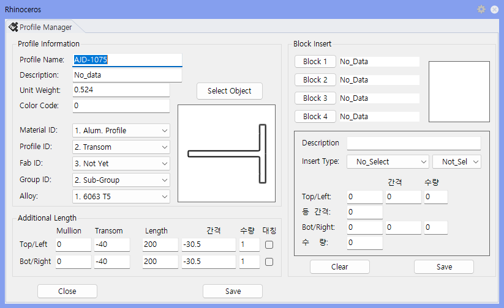

Surface Data Input
Surface Data specifies how a Section Surface will be extruded in the Mullion or Transom direction, and what material, purpose, and machining properties it will have.
Used to specify the extrusion direction (Mullion/Transom) and material, purpose, and machining properties of a Section Surface. By specifying the creation purpose (Mullion, Transom, Sleeve, Bracket, etc.) with Profile_ID, material classification with Material_ID, and length adjustment with Additional Length, you ensure members are created with the correct length and properties.
Pname.Material_ID.Profile_ID.
| Item | Description |
|---|---|
| Material_ID | Specifies the list classification: Alum.Profile, Steel, Accessory, Subtracter, Sheet, etc. |
| Profile_ID | Specifies the modeling purpose: Mullion, Transom, End Cap, End Dam, Vent, Sleeve, Bracket, etc. |
| Fab_ID | Specifies special machining purposes: Line Limit, Temp, etc. |
| Additional Length | Sets extension, shortening, fixed length, spacing, and quantity in the Top/Bot or Left/Right direction. |
| Item | Description |
|---|---|
| Modeling Result | A Surface solid is created based on the Wire Frame dimensions and entered data. |
| List Result | Reflected in the list classification according to Material_ID and Profile_ID. |